The Newman-Penrose formalism differs from the tetrad (frame) formalism mostly in the choice of basis, which is now taken to be null. In addition, the usual expression of this formalism draws away from the use of indexed objects and instead defines a new set of complex quantities. The implementation of the Newman-Penrose formalism in REDTEN is based on an article by Esteban and Ramos in Computers in Physics, May/June 1990, p. 285.
BUT: there are many errors in the article, not the least of which is a non-zero Ricci tensor for a vacuum metric!. This is due to a transcription error, and involves taking a conjugate when one shouldn't. To be fair, even the original N-P paper has several printing errors!
In the Newman-Penrose fromalism, the tetrad is null, i.e.

and also satisfies the conditions
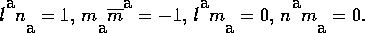
A connection can be defined in the same fashion as described above for the tetrad package, and the tensor metric can be defined in term of the basis vectors from
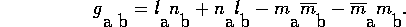
From the basis vectors one computes 12 spin coefficients that are commonly known by their greek names. The Newman-Penrose equations can then be solved for the 5 components of the tetrad projection of the Weyl tensr (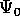, 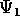, 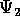, 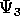, 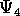), and the 6 components of the Ricci tensor (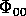, 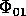, 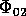, 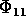, 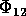, 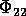), following the reference noted above. The Newman-Penrose equations are rather complicated and numerous (there being 18 equations), and are not repeated here.
The REDTEN function npmetric() will take either the name of a
connection, or the names of the three basis vectors  ,
,  , and
, and
 , and compute from them the tensor metric, and, in the latter form
of input, also create the connection object (the default name is
stored on npcon). The tensor metric is named according
to the usual rules of metric names previously described.
, and compute from them the tensor metric, and, in the latter form
of input, also create the connection object (the default name is
stored on npcon). The tensor metric is named according
to the usual rules of metric names previously described.
The function npspin() computes the spin coefficients, and places
them in an array whose name is stored on the variable npspin.
The array has indices that run from 1 to 12.
In order, these array components are 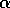, 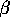,  ,
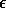, 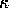,
,
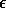, 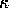,  , 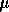, 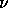, 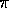,
, 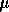, 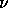, 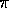,  ,
, and 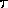. For convenience, the REDUCE names alpha, beta, gamma, eps, kappa, lambda,
mu, nu, pi, rho, sigma, and tau
can be made equivalent to the array references with the function
npnames(). This function has no arguments, and causes the names to be
mapped by the REDUCE parser. Since some of these names may be
useful in other situations the mapping behaviour is not on by
default. Calling npnames() again removes the mapping.
,
, and 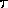. For convenience, the REDUCE names alpha, beta, gamma, eps, kappa, lambda,
mu, nu, pi, rho, sigma, and tau
can be made equivalent to the array references with the function
npnames(). This function has no arguments, and causes the names to be
mapped by the REDUCE parser. Since some of these names may be
useful in other situations the mapping behaviour is not on by
default. Calling npnames() again removes the mapping.
The functions npweyl() and npricci() compute the tetrad projections of their respective tensors. However, in the Newman-Penrose formalism, these projections are not normally regarded as being indexed objects, the subscripts serving only to distinguish the components. In REDTEN the Weyl components are stored in a one-dimensional array whose name is stored on npweyl. The Ricci components are stored in a symmetric two-dimensional array whose name in on npricci.
A demonstration of the Newman-Penrose package using the Kerr metric as an example follows.
We first ask that the spin-coefficient names be mapped by a call to npnames(). Then we create and assign the basis vectors (which are of course different than in the previous example).
#: coords '(t r th ph);
#: npnames();
#: mkobj ('(l n m), '(-1));
l
a
n
a
m
a
#: complex rhob;
#: rho2 := rhob * cnj(rhob);
#: ias (l);
l[0] = sqrt(2);
l[1] = -sqrt(2)*rho2/delta;
l[2] = 0;
l[3] = -sqrt(2)*a*sin(th)^2;
l
#: ias (n);
n[0] = sqrt(2)*delta/(2*rho2);
n[1] = 1/2;
n[2] = sqrt(2)*delta/(2*rho2);
n[3] = -sqrt(2)*a*delta*sin(th)^2/(2*rho2);
n
#: ias(m);
m[0] = i*a*sin(th)/rhob;
m[1] = 0;
m[2] = -rho2/rhob;
m[3] = -i*(r^2+a^2)*sin(th)/rhob;
m
#: let r^2=sin(th)^2*a^2-a^2+rho2$
#: let rhob*cnj(rhob)=rho2$
#: let df (rhob,r) = 1;
#: let df (cnj(rhob),r) = 1;
#: let df (rhob, th) = -i*a*sin(th);
#: let df (cnj(rhob), th) = i*a*sin(th);
#: let df(delta, r) = 2*r-2*m;
We can now compute the tensor metric, the spin coefficients and the
projections of the Weyl and Ricci tensors.
#: npmetric(l,n,m);
cofactor finished.
determ finished.
invert finished.
metric finished.
g1
#: mapfi(g);
g1
#: mapfi(g_inv);
g1_inv
#: on showindices;
#: npspin();
computing g1_npspc
computing npz_CD
computing g1_c2
computing g1_c1
christoffel1 finished.
christoffel2 finished.
cov finished.
computing alpha
computing npz_c
shift finished.
computing beta
computing gamma
computing eps
computing kappa
computing lambda
computing mu
computing nu
computing pi
computing rho
computing sigma
computing tau
g1_npspc
#: npweyl();
computing g1_npC
computing g1_npC[0]
computing g1_npC[1]
computing g1_npC[2]
computing g1_npC[3]
computing g1_npC[4]
g1_npC
#: npricci();
computing g1_npric
computing g1_npric[0 0]
computing g1_npric[0 1]
computing g1_npric[0 2]
computing g1_npric[1 1]
computing g1_npric[1 2]
computing g1_npric[2 2]
g1_npric
#: off showindices;
The final values for rhob and delta are entered, and the
objects are resimplified. The simplification is done in two steps.
First the new definitions for rhob and delta are combined
in each component (which in most cases results in 0), then the
remaining components are rationalized via the rat() function. If
the initial simplification is not done, then a large amount of work
involved in rationalizing expressions that eventually collapse to zero
would be wasted.
#: clear r^2;
#: let rhob = r+i*a*cos(th);
#: let delta = r^2-2*m*r+a^2;
#: mapfi (npC);
g1_npC
#: mapfi (rat (npC));
g1_npC
#: mapfi (npric);
g1_npric
#: mapfi (rat (npric));
g1_npric
#: on factor;
#: npC[2];
2 2 2 2 2 2 2
(((sin(th) a - a + 3 r ) cos(th) a i + 3 sin(th) a r - 3 a r
3 2 2 2 2 3
+ r ) m)/(sin(th) a - a - r )
In these results one will notice that 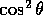 has been factored
in favour of 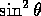, due to the existence of a let-rule
defining the relation. For this metric, a better choice would have
been the reverse rule.